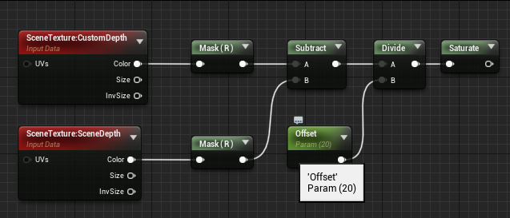
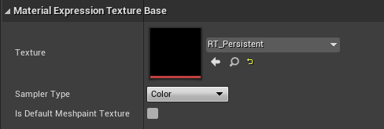

Persistent Trails with Render Targets
Allowing entities in your game to leave trails
A lot of AAA games have defining features that make these games memorable and popular. One of them, in my opinion, is their ability to have reactive environments, such that the player feels that the game is truly reacting to their actions. My favorite is the ability for the ground to react to players' size and movements. In this tutorial, I will show how to implement persistent trails using render targets in Unreal Engine 4. This will cover how to implement the effect on a basic landscape material. This effect can be reorganized with the addition of a few nodes but it is adjustable. If you wish to know more on this, some of your questions may be answered in the Shared Landscape Deformation System tutorial on the portfolio page. This tutorial assumes you have a bit of knowledge on how UE4 works, since it is a specific topic.
Creating Persistent Trails in UE4
Step 1
To begin implementing this, you need a landscape, and a landscape material. From a new project (or not), go to landscape mode by pressing shift + 2, and create the landscape of the dimensions of your choosing. I chose a 505x505 one for this tutorial. Next, create a material to assign to this landscape. I always name mine M_Landscape because it's simple. You don't need to do much with it right now or even assign it to the landscape yet. Just make sure that in the Details panel, you have Two Sided enabled in the Material settings, and the D3D11Tessellation Mode in the Tessellation settings near the bottom of the Details panel set to "Flat Tessellation". You can now take the time to mess around with sculpting the landscape, as a non-flat surface will help in visualizing the correct amount of deformation you'd like to have.
Step 2
We will have to create multiple things to get this system going. The system works by essentially placing a camera below the landscape that aims directly upwards, and having a post process material determine whether or not the objects in view are higher than the ground given an offset. If the objects are within the specific range between the ground and the offset, they are then masked. The camera is a scene capture, or in other words a camera that writes to a render target. The render target here will capture the changes that we will write to another render target to create the persistency that we desire. There is obviously always more to it than a couple sentences, but this is the main idea. This system will work once all of the pieces are put together, so don't worry if things don't work until the last step. So, first, we will create a post process material that we will name "PP_DepthCheck". You can make the material a post process material by changing the Material Domain in the Details panel to Post Process. Open that up in the editor. To check for depth, we will create two buffers: one for the ground, the other for objects that will leave trails. We will do this by creating to SceneTexture nodes and setting the Scene Texture Id to "CustomDepth" for the top one, and "SceneDepth" for the second. Next, create a component mask for both and deselect the green field. Drag the output of the first mask out to the right and create a subtract node. Then grab the output of the second mask and attach it to input B of the subtract node. We will now divide the output of the subtract node by the offset we want to give the range of effect for the trail. This will be the range that objects will be considered for leaving trails, or a "capture" zone. So, drag the output of the subtract node and create a divide node. Below the subtract node, create a scalar parameter node by holding S and left-clicking and set the value to your desired range, and name the node "offset". I chose the default value for the scalar parameter to be 20, so that it's about above the ankle on the third-person template. Next, drag the output of the divide node to the right and create a saturate node.
We want to catch the difference of this output, so we will create a "OneMinus" node, a 1-x node. Drag the output of the saturate node and create the one minus node. Drag this output out and create an add node. Below the saturate and one minus nodes, create a texture sample node. This sample will take in the persistent render target that we will create in a bit. Drag the output of the texture sample in input B of the add node. Finally, drag the output of the add node and create another saturate node. Connect it to the emissive color input of the master node. This will complete the set up of the Depth Check material for now, but we will return here later to input the persistent render target in the texture sample.

Step 3
We will now set up the Scene Capture. Since this scene capture will need render targets to write to, we must create the first one. Head to your content folder and create a folder called RenderTargets (or don't, it's just to be organized). In there, right-click and go down to Materials & Textures and select Render Target. Name it "RT_Capture". This will be the render target our Scene Capture will write to, that will then write to another render target to create persistency. Set the resolution to the accuracy you would like the detail of the trails to be at. I chose 512. So let's make that Scene Capture. Head to the Content folder and create a Blueprints folder (once again for organizational purposes). Create a Blueprint and name it "BP_Capture". Open it up. In the components section, go to Add Component and add a Scene Capture Component 2D, and name it "SceneCapture". In the viewport of the editor, set the rotation of the camera on the Y-axis and Z-axis to 90 degrees.
Next, we want to remove perspective distortion since we want to cast the information to a 2D mask. We need to head to the Projection options in the Details panel and set the projection type to Orthographic. Also set the ortho width to however large you'd like the area of effect of the trails to be. I set it to 4096 (powers of two are your friend). This is the value you will want to change to expand or shrink the capture area.
Up next, we want to have the Scene Capture check for depth. Head down to the Post Process Volume settings in the Details panel. Open up rendering features, then post process materials, add an array element and select asset reference. Select "PP_DepthCheck", that cool thing we made earlier. Finally, we're going to assign the Render Target we created to the Scene Capture down in the Scene Capture settings of the Details panel. So for texture target, select "RT_Capture". Oh, also set the Capture Source setting to "Final Color (LDR) in RGB". This wraps up the first part of the setup for the Scene Capture. We have to setup its other parts, now.
Step 4
Let's make a material parameter collection. Head to your materials folder and right-click and select material parameter collection in materials & textures. Name it "MPC_Capture". This will, as you may have guessed, store the capture size of the Scene Capture. This is so any material can read the value assigned to the Ortho Width of the Scene Capture through the CaptureSize parameter we're about to make. So, yeah. Open up that material parameter collection and in Scalar Parameters, add an array element and name it CaptureSize. You don't need to change the Default Value as it will be automatically added by a little addition we will make to the Scene Capture blueprint. Since we're here, too, add an array element to Vector Parameters and name it CaptureLocation. This will come in handy later.
Step 5
The Scene Capture blueprint needs a few more things added to it to work, now. Head back to the BP_Capture blueprint and open it up, and go to the Event Graph. In the My Blueprint folder on the left (it's on the left in my UE), we're going to create a few functions, variables, and a macro. Under the Variables section, create a Material Instance Dynamic object reference and name it "DrawMaterial". Also create a Vector 2D structure and name it MoveOffset. In the Macros section, create a macro and call it "SnapToPixelWorldSize". And then in the Functions area, create two functions: one named "DrawToPersistent", and one named "MoveCapture". I will cover the reason for all of these things shortly, but just know that these are required later.
Next, in the Event graph, drag the output of the Event BeginPlay node to the right and create a Set Scalar Parameter Value node. Below the Event BeginPlay node, create a Get Scene Capture node. Drag the output to the right and create a Get Ortho Width node. Connect the output of that node to the Parameter Value input of the Set Scalar Parameter Value node. In the Set Scalar Parameter Value node, set the Collection input to MPC_Capture, and Parameter Name to CaptureSize.
We've just enabled any material to get the Ortho Width from the CaptureSize parameter. Now we need to create a few more things and set them up before we can connect everything together.
Step 6
We will now create the Persistent Render Target. Head to your Render Targets folder and create a new render target and name it "RT_Persistent". All you need to do with this one is make sure it matches the resolution of the RT_Capture. Now head to your Materials folder and create a new folder called Material Functions. Create a new Material Function by right-clicking, going down to materials & textures, and selecting Material Function. Name it "MF_MaskUV0-1". This is the mask we need to mask out the UVs that are outside the capture area. Open it up and create a FunctionInput node. Change the Input name to UV, and the Input Type to Function Input Vector 2. Link the output to a new Custom node and in the Code portion of the Details panel, write the following:
Link the output of that to a FunctionOutput node, name it "result" or whatever, and set it to Preview by right-clicking and choosing the option. You can click Apply or Save and close that now.
Step 7
We will now create the material that takes the RT_Capture's information so it can draw the persistency. Go to your Materials folder and create a material and name it "M_DrawToPersistent". Open it up and let's set it up. To the left, create a Vector Parameter node by holding V and left-clicking, and name it Offset. Drag its output to create a ComponentMask node. Have the R and G options selected. Under it, create a Constant2Vector node and set the values to -1.0 and 1.0 respectively. Drag the output of the ComponentMask and create a Multiply node. Drag the Constant2Vector's output to input B of the Multiply node. Above it, create a TextureCoordinate node and drag its output to its right to create an Add node. Link the Multiply node's output to input B. We are now going to link the Material Function we made earlier to the RT_Capture and multiply it. Drag the Add node's output to its right and create a MaterialFunctionCall node. In the Material Function field, select "MF_MaskUV0-1". Now drag the Add node's output to below the Material Function node and create a Texture Sample node (hold T and left-click). In the Texture options of the Details Panel, select RT_Capture. Create a Multiply node to the right of that and assign the Material function to input A, and the Texture Sample to input B. Link that Multiply node to the Emissive Color input of the master node. That completes this material. It should look like:
Step 8
Let's input the RT_Persistent that we made in Step 6 into the texture sample in our PP_DepthCheck material. This won't do anything yet because we still have to define a couple functions to make this work. So in you PP_DepthCheck material, open it up and input RT_Persistent as the option for the Texture setting of the Texture Sample node.
Now let's recall what we have. At this point, you should have 3 materials (M_DrawToPersistent, M_Landscape, and PP_DepthCheck), 1 material parameter collection (MPC_Capture), 1 material function (MF_MaskUV0-1), 2 render targets (RT_Capture, RT_Persistent), and 1 Blueprint (BP_Capture). There's a bit more to it, though. Let's set up the functions for the blueprint.
Step 9
In BP_Capture, open up the Event graph. We're going to get the Set Scalar Parameter Value node to output to a Create Dynamic Material Instance. Set the Parent to M_DrawToPersistent. Drag the output to a Set Draw Material node and link the Return Value of the Dynamic Material Instance node to the Draw Material field of the Set node. Drag the output of the Set node to a new Clear Render Target 2D node. Duplicate that node we just made. In the first Clear Render Target 2D node, set the Texture Render Target to RT_Capture. Link the output of that node to the second Clear Render Target 2D node. Set the Texture Render Target of the second to RT_Persistent. It should look like:
That's that for the Event BeginPlay section, now we need to set the Event Tick node. This is where we will connect the MoveCapture and DrawToPersistent functions, but we need to write a macro for the MoveCapture to work. So let's quickly do that SnapToPixelWorldSize macro.
Step 10
Open up the SnapToPixelWorldSize macro by double clicking. In the input node, add three parameters. Name them Player X, Player Y, and Pixel World Size and set them all to floats. To the right of it, right-click and add a math expression. In the expression field, copy and paste the following: (((vector((floor((PlayerX / PixelWorldSize))), (floor((PlayerY / PixelWorldSize))), 0)) + 0.500000) * PixelWorldSize) . This operation returns the values of the player's X and Y coordinates divided by the PixelWorldSize to a vector and adds an offset, the multiplies the result by the PixelWorldSize. Now link the output of that to the Return Value field of the Outputs node.
You can go ahead and compile it then close it.
Step 11
Up next we have our MoveCapture function. Open it up in the editor and create a Get Player Character node and link its output to a new GetActorLocation node. Below the Get Player Character node, create a SceneCapture node. Drag the output and create a Get Ortho Width. Drag the Ortho Width output and create a Float * Float node, which is just a multiplication node. Below that, create a float / float node, which is also just a divide node, and set the numerator to 1, and denominator to the resolution you chose for your Render Targets. In my case, it would be 512. Go back to the GetActorLocation node. To the right, create a reference to SnapToPixelWorldSize and link the Return Value X and Return Value Y to the inputs of Player X and Player Y of the macro node. Drag the output of the multiplication node to the input for PixelWorldSize. Below the macro node, create a GetActorLocation node and set the target reference to self.
Now we will create a Vector - Vector node and right-click the output field and split the struct pin. Link the macro node's output to the top vector and the GetActorLocation to the bottom vector. Grab the master node (the purple one that says MoveCapture) and drag the output to the right and create a Set Move Offset node. Link the output of the Vector - Vector node to the input of the Set Move Offset node. Now drag the output of the node to create an AddActorWorldOffset node. Set the Target field to self. Link the X and Y output fields of the Set Move Offset node to the Delta Location X and Y fields. Drag the output of the AddActorWorldOffset and create a Set Vector Parameter Value node. In the Collection field, select MPC_Capture. Set the Parameter Name to CaptureLocation. Below the AddActorWorldOffset node, create a GetActorLocation node. Set the Target field to self and link the return value to the Parameter Value field of the Set Vector Parameter Value node. It should look like:
This function essentially moves the capture area with the player so that the area of effect persists around the player only. Hit Compile and head back to the Event graph of the BP_Capture. Drag the output of the Event Tick and create a Move Capture reference.
Step 12
Now we just have to define our DrawToPersistent function. Open that up in the editor. Drag the output of the master node (yes, the purple one again) and create a Set Vector Parameter Value node. Create a reference to Draw Material and link it to the Target field. In the Set Vector Parameter Value node, set the Parameter Name field to Offset. A little to the bottom-left of that, make a SceneCapture node linked to a Get Ortho Width node. Right above it, create a reference to the MoveOffset. Drag the output of the MoveOffset node and create a Vector2D / float node. Right-click the output field and select split struct pin. Then link the Ortho Width to the float field. The X and Y fields need to be linked to the Value R and Value G fields of the Set Vector Parameter Value node. The Value B and Value A fields should be set to 0 and 1, respectively. We're now going to take the output of the Set Vector Parameter Value node and create a Draw Material to Render Target node. In the Texture Render Target field, select RT_Persistent. Now make a reference to the Draw Material and link it to Material input of the Draw Material to Render Target node. Now press Compile!

Back in the Event graph, link the output of the Move Capture node and create a reference to the DrawToPersistent function we just finished. That's it for the blueprint, good job!
Step 13
Almost there, I promise. Now all that's left to do is throw the BP_Capture under the landscape and setting up the landscape material. In the blueprints folder thats' in your Content folder, drag BP_Capture onto the scene. It should be facing upwards like we set it in the blueprint. In its location, go ahead and set the Z-axis parameter between -2000 and -4000. Find the sweet spot for the amount of detail you'd like. Of course, you can change that after we've set up the landscape material. I'll make a reminder of what values to change around at the end so you don't have to look through the whole tutorial again.
Step 14
Head to your landscape material, M_Landscape and open it up. We're going to add three chunks, and then not-so-chunks, to make this finally work. To the far left of your master node, create a WorldPosition node. Make sure the Shader Offsets field in the Details panel is set to Absolute World Position (Including Material Shader Offsets). Below that, make a CollectionParameter node and input MPC_Capture in the Collection field, and CaptureLocation in the Parameter Name. Create two ComponentMask nodes and connect the two nodes we just made to their own. Make sure both the R and G fields are selected for both masks. Drag the top one out and make a Subtract node. Link the bottom mask to input B of the node. Drag the output of the Subtract node and make a Multiply node. Create a Constant2Vector below the Subtract node and link its output to input B of the Multiply node. Change its default values to -1 and 1. You can box-select that and press C to name it "1".
This section makes it so the render target will always be projected at the CaptureLocation. Next we will create the section that centers the render target at (0, 0) in world space and converts into UV space. So from here, drag the output of the Multiply node to the right and create an Add node. Drag the output of that and make a Divide node. Duplicate that divide node and input "2" for the value of B. Drag the output of that divide node into input B of the Add node. Move it to the left accordingly if you want to stay organized. To the left of that divide node, create a new CollectionParameter node. Set the collection to MPC_Capture and the Parameter Name to CaptureSize. You can comment those nodes and name it "2".
Drag the output of the rightmost divide node and make a MaterialFunctionCall node. Input MF_MaskUV0-1 to the material function field. Double-click the white link to it to split it. Drag the ball you just created below the MaterialFunctionCall node we just made and make a texture sample node. Select RT_Capture in the texture field. Now just drag the output of the MaterialFunctionCall node and make a Multiply node that you'll connect the R output of the Texture Sample node into the input B of the Multiply node. Drag the Multiply output to create a OneMinus node. We're going to multiply this with the value of the offset we created in the PP_DepthCheck material. So, drag the OneMinus node out to make a Multiply node. Below the OneMinus node, create a Scalar Parameter node by holding S and left-clicking and name it "Displacement Height". Make sure the default value in it matches the value you used in PP_DepthCheck. Now link it to input B of the multiply node. Next, create another Multiply node from the Multiply node you made and make a VertexNormalWS node below it. Snap the output of that to input B of the second Multiply node. Finally, connect the output to the World Displacement node of the master node.
Almost there. We need to pick the colors of the material below and the material that going to be trailing. Hold 3 and left-click to make a Constant3Vector. This is a color. For the sake of the tutorial, we're making snow trails. Below the snow is a sandy earthy material. So I made 2 of those nodes and made one off-white, and the other is yellowish. Drag the output of the color you want BELOW and make a Lerp node. Put the color you want ON TOP to the input B of the Lerp node. Now head down to the OneMinus node from earlier and link it to the Alpha input of the Lerp node. Link the Lerp node's output to the base color of the master node. Add some constant nodes to adjust your Roughness, Metallic, etc, settings to however you like. Remember to assign the landscape material to your landscape.
If I haven't made any mistakes in this tutorial and you've followed along and compiled everything, you should be able to walk around and leave trails that look like this!
Step 15
You could technically stop here. But in my opinion, the trails are not cutting it for me. I'd like the impact of my character to leave a "fluff" effect such as rising of the material around his footsteps. Snow does not magically disappear when you step on it, it gets displaced and denser and such. So for one last step, I'm going to include how to implement that as well.
Head back into the landscape material. Below the MaterialFunctionCall and TextureSample nodes, we're going to make our fluff. We need to create a SpiralBlur-Texture node. We'll cast a TextureObject node to the input for it and make sure RT_Capture is the texture we are using for it. For the Distance(S), Distance Steps (S), Radial Steps (S), and Kernel Power (S), we need to create four constant value nodes that I personally assigned the values of 0.01, 8, 4, and 0, respectively. You ideally want to keep the Distance Steps and the Radial Steps as low as possible for performance. The values I have selected already perform really well, so it should be good for you too. But just to be safe, try not to go over these values. Next we're going to take the output of the SpiralBlur-Texture node and make a ComponentMask. Disable the G field so that only R remains and output the result to a multiply node to the right and a Sine node below. Output the Sine node to a Multiply node. For both inputs B of the Multiply nodes, create Scalar Parameter nodes. For the one on top, call it "Ridge Height". Call the other "Ridge Thickness". They will determine exactly what they're called. Try the values 2.4 for height, and 1.4 for thickness for a start and play around with the values to make sure you have the effect you're looking for. Link the top Multiply node to a Subtract node below, and connect the lower Multiply node to its input B. Pull the output of that Subtract node and make a Clamp node. Set the Min to -1, and Max to 1. Now go ahead and Box-select those nodes and comment them with "fluff". This block will replace the texture sample of the landscape material. So where you split the link to connect the Texture Sample node, grab that and drag it to the UV (V2) field of the SpiralBlur-Texture node. Grab the output of the Clamp node to attach it to the input B of the Multiply node the Texture Sample node was outputting. It should look like:
This addition should give you these results!
Step 16
Save the landscape material and make a material instance of it. Then, assign the instance to your landscape. By doing this, you can readily
change the values in the scalar parameters without hurting the original material. All in all, the values you should play around with are:
- Displacement Height (M_Landscape)
- Ridge Thickness (M_Landscape)
- Ridge Height (M_Landscape)
- Offset (PP_DepthCheck)
- Render Target Resolutions (RT_Capture & RT_Persistent)
- Ortho Width (BP_Capture)
Playing around with these will allow you to reach your desired effect without changing too much stuff. Remember to keep the resolutions of
the render targets the same value! Weird stuff happens if not.
Performance
In UE4, there are multiple ways to achieve this effect. You could potentially cast the deformation as a blueprint assigned to each entity
you wish to have this effect. Yet, this would be overwhelmingly costly because it would have to update for each entity. By using render targets
to capture changes in the texture, you can bypass both the costly performance issues and apply this effect to all entities within the render
target without having to go and assign the effect to said entities. This also keeps the effect contained to whatever is within the view range of
what the capture area is following, simplifying rendering costs. The performance costs are then reliant on how many entities you have in scene.
The addition of the spiral blur texture node to apply a ridge thickness and height around the displacement is also a hit to performance, but by
having the radial steps and distance steps set to such low values, we mitigate a very large part of that cost, making this implementation a benign
addition to performance costs in the grand scheme of things.